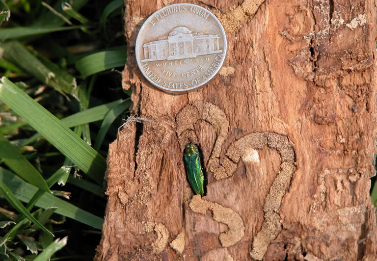

East Metro: 651.770.3744
West Metro: 952.881.3779
Wisconsin: 715.749.3475
Emerald Ash Borer (EAB)
EAB is an exotic pest from Asia that was first discovered in Michigan in 2002. Since its discovery, EAB has been responsible for killing millions of ash trees in the United States. This invasive insect has spread like wildfire and is now present in Illinois, Indiana, Iowa, Kentucky, Maryland, Michigan, Minnesota, Missouri, New York, Ohio, Pennsylvania, Tennessee, Virginia, Wisconsin, West Virginia, and Canada. Emerald ash borer, in North America, has only been noted to attack true ash species (Fraxinus sp.), not mountain ash (Sorbus sp). One thing unusual about this wood- boring beetle is that it attacks and kills completely healthy trees as well as stressed trees.
Signs/symptoms:
Signs and symptoms that may mean your ash tree is under attack by EAB include, Tip dieback, crown thinning, abundant epicormic sprouts (sucker growth), woodpecker damage, small D-shaped exit holes in the bark, and serpentine galleries underneath the bark. Detection is difficult from the ground and often requires ascending into the upper part of the canopy for a closer evaluation. Only a certified arborist should conduct this evaluation.
Life cycle:
Emerald ash borer belongs to a group of beetles called the metallic woodborers because of the adult beetles’ iridescent color. They spend the winter as larvae in small cells just beneath the bark. Full-grown larvae are ½-1 inch long, white, and slender with two brownish projections on the last segment of the body.
Larvae pupate in spring and adults emerge during May, June, and July. The adults chew their way through the bark, leaving characteristic D-shaped exit holes, which are useful in identifying emerald ash borer problems. Adults are slender, metallic green beetles. They are about 1/2 inch long with blunt heads and pointed bodies. Adult females live for about 4 weeks and deposit eggs under loose bark or in cracks or crevices on the trunk. Eggs hatch within 2 weeks, and larvae bore into the tree and feed on the vascular tissue directly underneath the bark. They feed in a serpentine pattern and leave behind S-shaped galleries. This feeding damage is what is responsible for killing the tree.
Control:
Cultural- there are a few simple things that should be done in order to naturally slow the spread of EAB and decrease the negative impact this beetle will have on our area. The first thing to do is to stop planting ash trees and start planting a variety of other tree species. When planting trees be sure to select a variety of species that are well suited for the specific environment they are being planted in. The next thing to do is to stop moving firewood. There are many different pests that are transported and spread when people move firewood.
Chemical - There are many different insecticides out there to protect ash trees from EAB. Some of the treatments are much more effective than others and the effectiveness depends upon many different factors. In general, it is typically best to use the trunk injected insecticide called Emamectin Benzoate on trees 15” in diameter at breast height (DBH) and larger. Usually with trees smaller then 15” in diameter at breast height you can get good protection with a soil applied systemic insecticide called imidicloprid. However, soil applied applications need to be repeated at least every year and Emamectin Benzoate has had great control for 3 years. Each situation should be evaluated by a certified arborist to come up with the best management strategy for your trees.
Quick Links
Request an Estimate


© 2011 - St. Croix Tree Service, 675 Grupe Street, Roberts, WI 54023
Designed by Lackey Designs